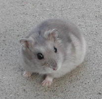
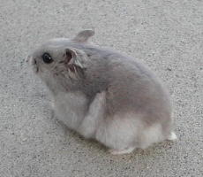
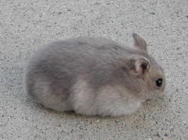
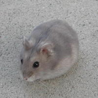
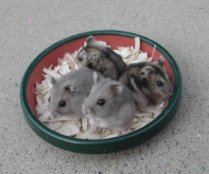

| Sapphire Winter White Dwarf Hamsters | ||||||||||||||||||
|  | ||||||||||||||||||
|  | ||||||||||||||||||
|  |  | |||||||||||||||||
| Sapphire is a recessive color mutation in the Winter White dwarf hamster. To create a Sapphire Winter White, at least one of the parents must be Sapphire in color or must carry the Sapphire gene (i.e. have a Sapphire ancestor). | ||||||||||||||||||
|  | ||||||||||||||||||
| This is a pair of Normal and a pair of Sapphire Winter White youngsters. You can see the distinct color difference. | ||||||||||||||||||